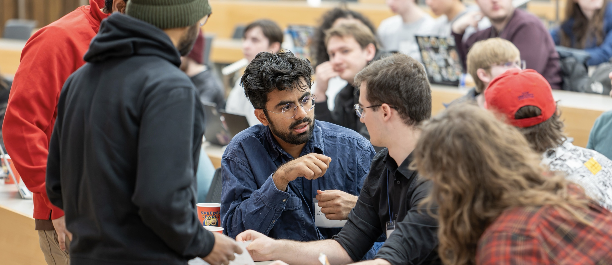

About
I am a Ph.D. candidate at the Vermont Complex Systems Institute, University of Vermont. My research uses machine learning and natural language processing to study how AI systems organize diverse world models.
Before Grad school, I studied the Western Classics at St. John's College in Santa Fe, New Mexico. I wrote my senior essay on Adam Smith's moral and economic philosophy. A portion of it was published here.
In my free time, I love to read, swing dance, and sail (weather permitting). I am also easily distracted by dashboards and live music.
Education
Ph.D. in Complex Systems & Data Science
2022 – Present
University of Vermont, Burlington, VT
B.A. in Liberal Arts
2017 – 2022
St. John's College, Santa Fe, NM
Teaching
Guest Lecturer, Introduction to Database Systems
Fall 2023 – Present
University of Vermont — Deliver a recurring guest lecture on Fundamentals of Data Visualization each semester.
Guest Lecturer, SoCKS Summer Internship Program
Summer 2024, 2025
Vermont Complex Systems Institute — Guest lectures on the History of NLP and Large Language Models.
Service
Board Member, US Northeast Chapter
Jan 2026 – Present
Complex Systems Society — Regional event planning and academic community coordination.
Lead Organizer, SCRaPS
Aug 2023 – Present
Vermont Complex Systems Institute — A weekly student-run seminar for presenting research and receiving peer feedback.